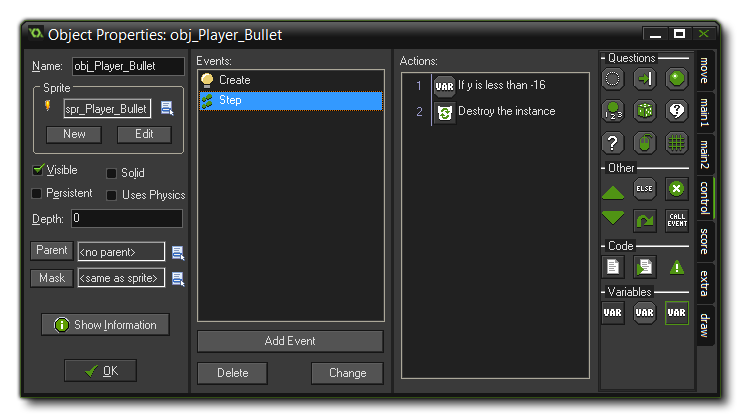
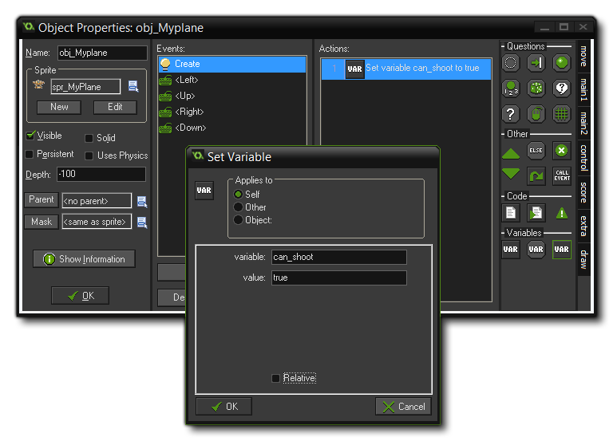
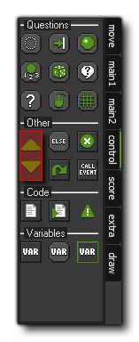
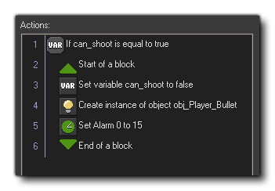

Tutorial
Page 7 of 9
Creating A Bullet
But what is a scrolling shooter if you cannot shoot and there are no enemies? We are now going to extend this game so that your player can blast away at enemy planes and have some real fun while doing it!
To start with, we are going to make the "canon" on the player plane so that it can shoot. For that we need a bullet sprite, which you can create (call it "spr_Player_Bullet") now, loading the sprite from the
"Scrolling Shooter Assets" folder and put its origin in the centre as we did for the player plane.

Now create a new object, call it "obj_Player_Bullet" and assign it this sprite. We will leave it with the default depth of 0 so that it will appear below the plane but above the islands. This
object will have a rather simple behaviour - in the Create event we will give it a vertical speed of "–8" to make it move upwards, and to avoid more and more bullets flying around we must destroy it once
it leaves the room (as even if it's not visible on the screen, it still exists unless explicitly destroyed).
Go ahead and add a Create Event now with the appropriate action (use the "Set Vertical Speed" action, set to -8), then in the Step Event we need to test whether the variable "y" is less
than –16 and if it is, we should destroy the instance. You should by now know how to do this by now, so go ahead and add this event and action, and check with the image below to make sure that you have it all correct.

Shooting
The bullet needs to be fired when the user presses the <Space> key. As in most shooters the plane should keep on firing bullets as long as the key is pressed, but we don't want too many bullets at the same
moment as this would make the game far too easy.
Therefore, we want to allow the player to fire only two bullets every second, that is, one bullet every 15 game steps (the room speed is 30, which is 30 steps every second, so if we want something to occur twice every
second, we need to divide the room speed by 2). To achieve this we will use a variable in our plane object - can_shoot. In the Create Event event of the object "obj_MyPlane" (open
the object now and add this event) we will initialise this variable for the instance and set it's value to true, indicating that we can indeed shoot a bullet, using the Set Variable action:

You know how to at Keyboard Events, so now add one to the player plane object for <Space>. in this event we need to test whether the variable can_shoot is equal true, and
if it is we need to create a bullet just in front of the ship, set can_shoot to false and also set an alarm to run in 15 steps. The alarm events are 12 special events that are simply built-in
counters for your game, where you set the alarm to a value (like 15) and it will count that value down, 1 step at a time, until it reaches 0 at which point it will run any code or D'n'D actions within the alarm event.
So, in our <Space> event, add a Test variable action and check can_shoot to see if it is true. Since we need to perform various actions, and not just one, if this check evaluates
to true, we need to indicated to GameMaker that a whole "block" of actions should be performed. This is done using the "block" actions from the Other section of the Control tab:

The "up" arrow is an Open Block and the "down" arrow is a Close Block, and everything that is enclosed within them will be run at once if the initial condition is true. Add an Open
Block action now, then use Set Variable to set can_shoot to false. Next, add a Create Instance action (from the Main1 tab) and set it to create an instance of
the object "obj_Player_Bullet", and set the x and y values to 0, but mark "relative", as that will create the instance at the same position as the player plane instance.
Finally, we need to add an action to set the Alarm Event. You can find this in the Main2 tab, so drag one into the action list and set alarm number 0 to 15, as we mentioned earlier. You need to
add a Close Block now, as every Open Block needs its corresponding closure otherwise GameMaker: Studio will give an error. the final event should look like this:

Note that you can easily change the rate of fire by changing the value of the alarm in this event, or you could set a variable to hold the alarm value and then change it if the player collides with a power-up object.
We need to add one final event to the player object, otherwise they will only be able to shoot once in the whole game... Add an Alarm0 Event to the object and in it set the can_shoot variable
to true again. With that done you can test your game and you should be able to shoot bullets, 2 every second, when you hold down the <Space> key.
© Copyright YoYo Games Ltd. 2015 All Rights Reserved